De janeiro de 2021 a janeiro de 2022 ofertamos a Oficina de Graffiti em parceria com a SECRETARIA DE DESENVOLVIMENTO SOCIAL, DIREITOS HUMANOS JUVENTUDE E POLÍTICAS SOBRE DROGAS de PERNAMBUCO.
Nossa História
De janeiro de 2021 a janeiro de 2022 ofertamos a Oficina de Graffiti em parceria com a SECRETARIA DE DESENVOLVIMENTO SOCIAL, DIREITOS HUMANOS JUVENTUDE E POLÍTICAS SOBRE DROGAS de PERNAMBUCO.
"A gente fala sobre vencer de uma maneira coletiva, isso só é possível ao se conectar com nossa comunidade." — Emicida
Cada oficina, cada grafite, cada roda de conversa e cada apresentação artística acrescentou camadas à nossa narrativa coletiva, uma narrativa de resistência, ancestralidade e alegria que reafirma a força do povo preto e das periferias.
Galeria de Fotos
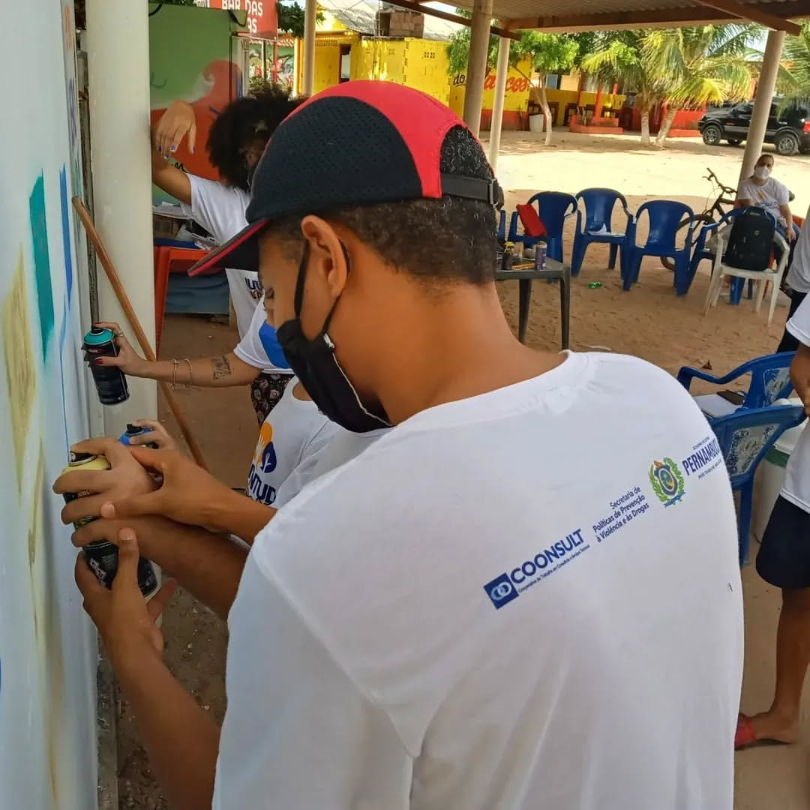
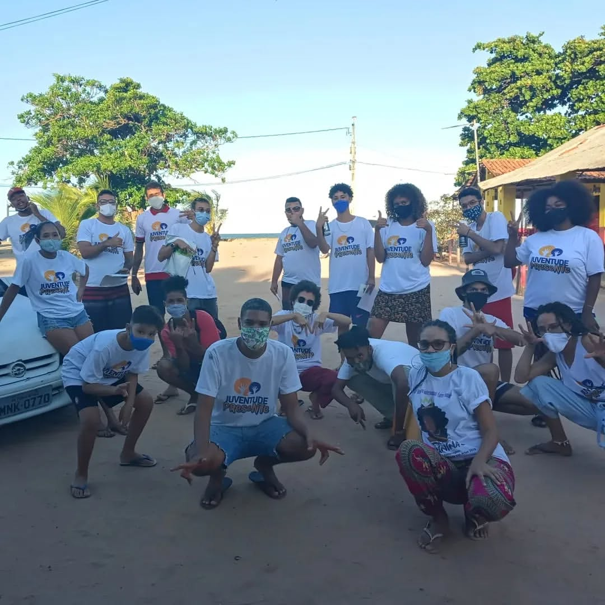
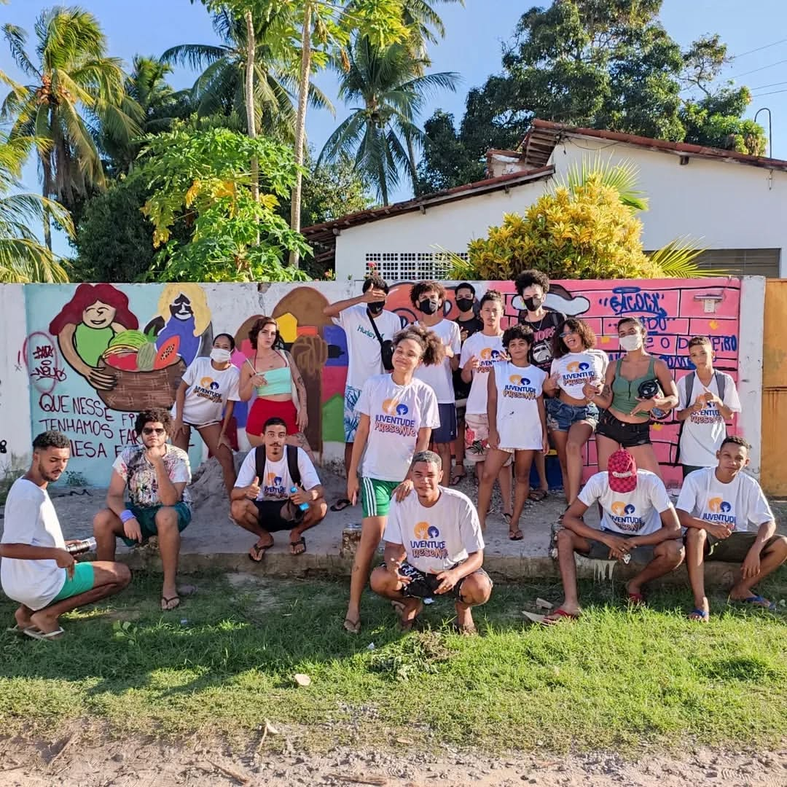
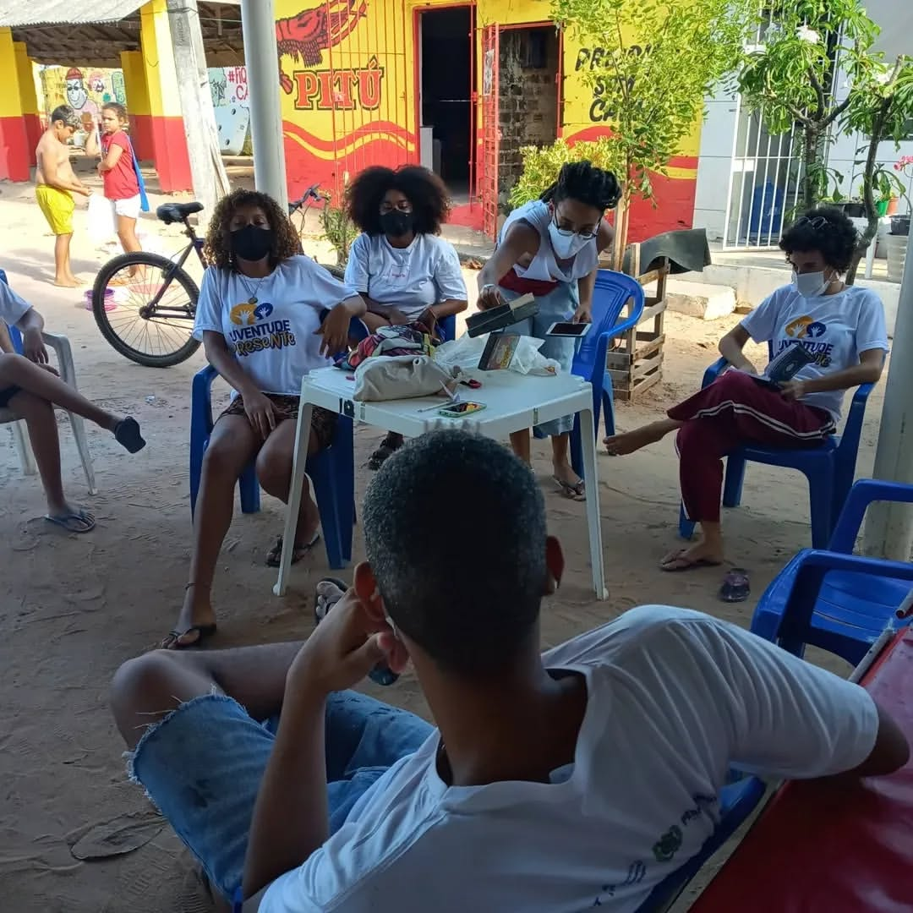
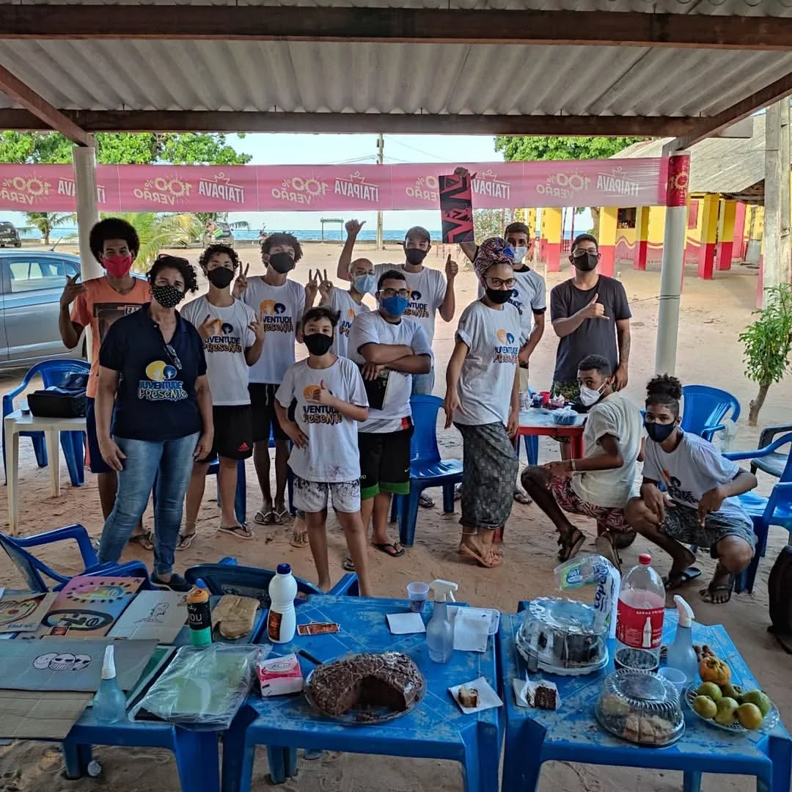
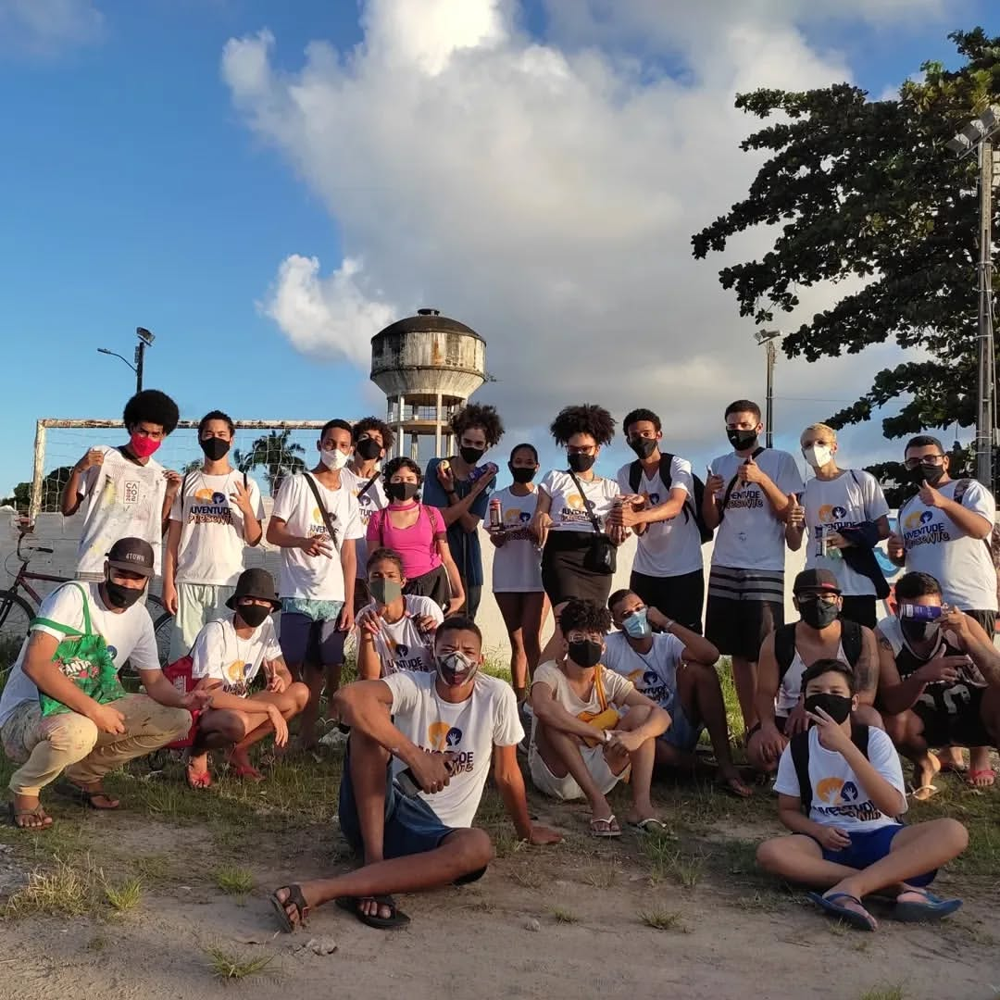
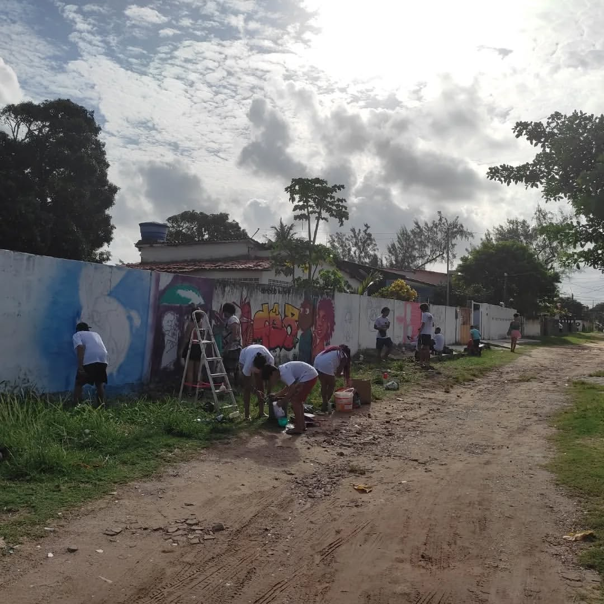
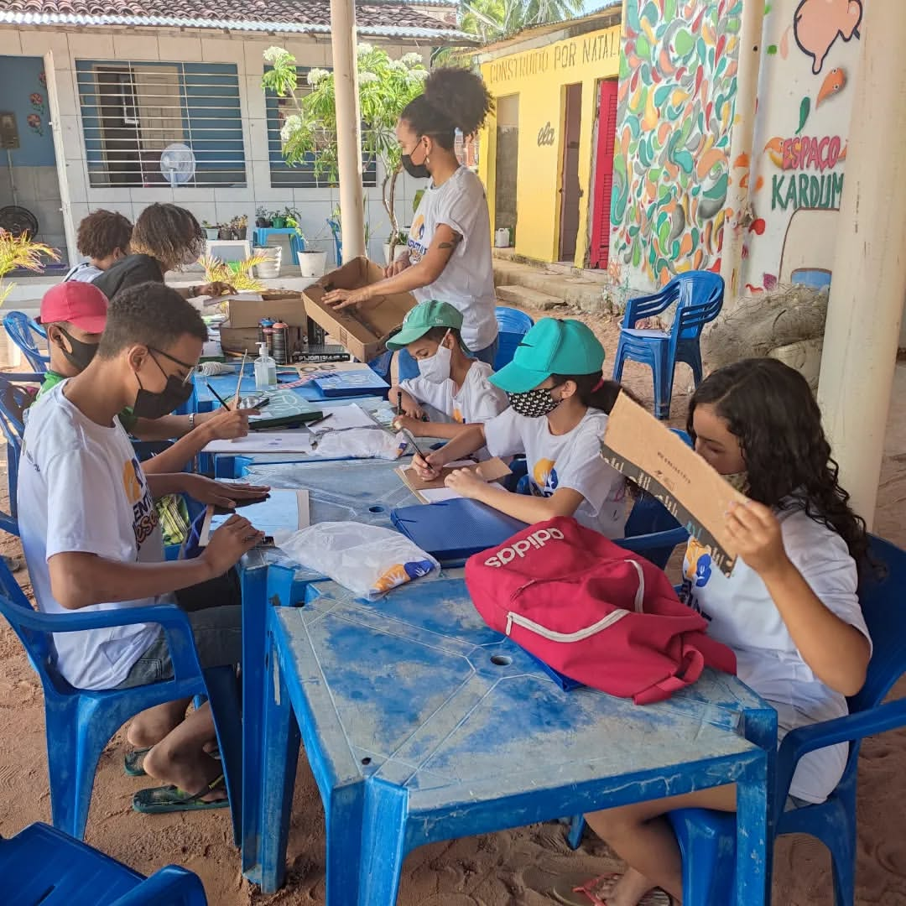
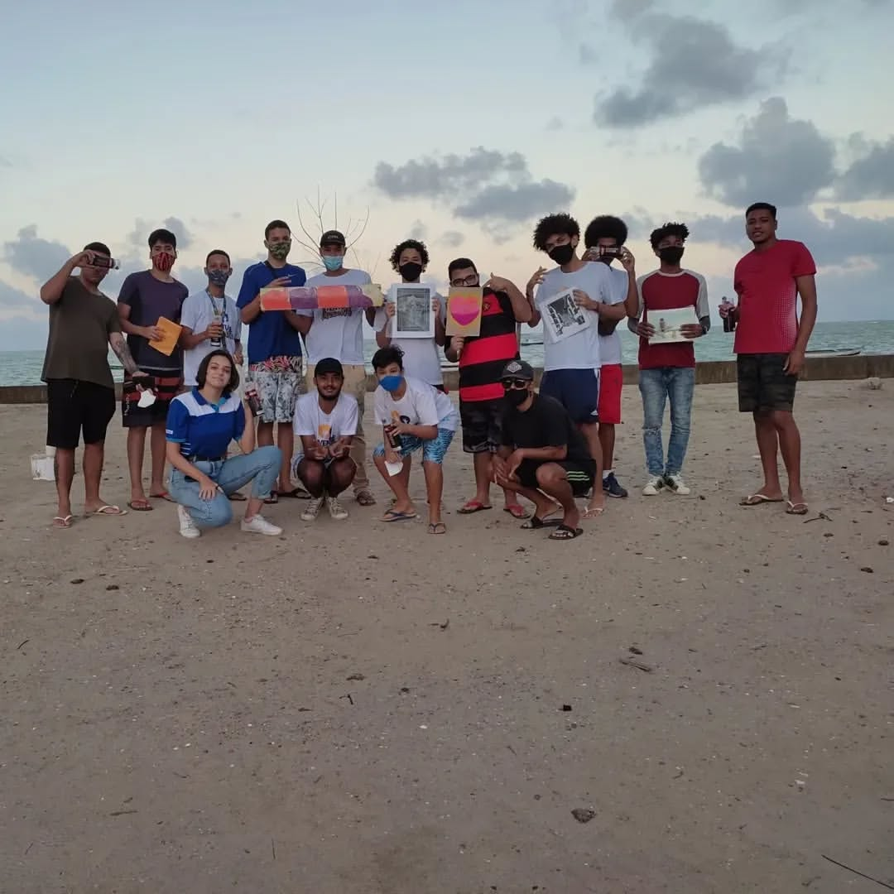
Abril de 2024 - Oficina de graffiti TRAÇOS, MÉTODOS E PROCESSOS NO GRAFFITI
Galeria de Fotos
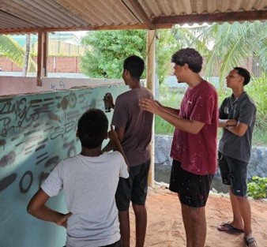
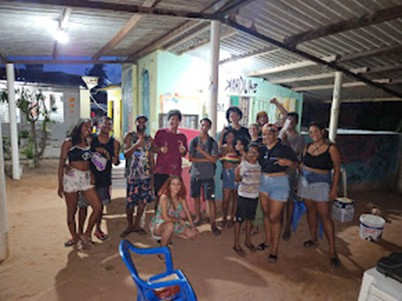
Durante os meses de março e abril de 2025 através da Lei Aldir Blanc ofertamos a oficina de graffiti KARDUME: O graffiti vai ao mar. Realizada em 4 encontros, a oficina foi uma mescla de aprendizagem e produção de graffiti e conscientização ambiental
Galeria de Fotos
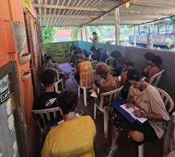
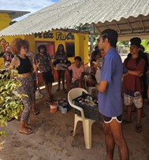
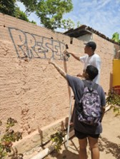
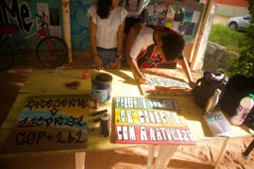
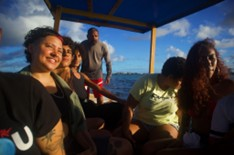
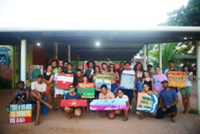